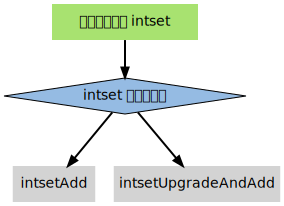

整数集合
Table of Contents
整数集合 intset 用于 有序 无重复 地保存多个整数值， 根据元素的值， 自动选择该用什么长度的整数类型来保存元素
举个例子， 如果在一个 intset 里面， 最长的元素可以用 int16_t 类型来保存， 那么这个 intset 的所有元素都以 int16_t 类型来保存 另一方面， 如果有一个新元素要加入到这个 intset ， 并且这个元素不能用 int16_t 类型来保存 比如说， 新元素的长度为 int32_t 那么这个 intset 就会自动进行“升级”： 先将集合中现有的所有元素从 int16_t 类型转换为 int32_t 类型， 接着再将新元素加入到集合中
根据需要， intset 可以自动从 int16_t 升级到 int32_t 或 int64_t ， 或者从 int32_t 升级到 int64_t
应用
Intset 是 集合键 的底层实现之一，如果一个集合：
- 只保存着 整数 元素
- 元素的 数量不多
那么 Redis 就会使用 intset 来保存集合元素
实现
以下是 intset.h/intset 类型的定义：
typedef struct intset { uint32_t encoding; // 保存元素所使用的类型的长度 uint32_t length; // 元素个数 int8_t contents[]; // 保存元素的数组 } intset;
encoding 的值可以是以下三个常量之一：
#define INTSET_ENC_INT16 (sizeof(int16_t)) #define INTSET_ENC_INT32 (sizeof(int32_t)) #define INTSET_ENC_INT64 (sizeof(int64_t))
contents 数组是实际保存元素的地方，数组中的元素有以下两个特性：
- 元素不重复
- 元素在数组中由小到大排列
contents 数组的 int8_t 类型声明比较容易让人误解：
- 实际上， intset 并不使用 int8_t 类型来保存任何元素，结构中的这个类型声明只是作为一个占位符使用
- 在对 contents 中的元素进行读取或者写入时，程序并不是直接使用 contents 来对元素进行索引，而是 根据 encoding 的值，对 contents 进行类型转换和指针运算，计算出元素在内存中的正确位置
- 在添加新元素，进行内存分配时，分配的空间也是由 encoding 的值决定
下表列出了处理 intset 的一些主要操作，以及这些操作的算法复杂度：
| 操作 | 函数 | 复杂度 |
| 创建 intset | intsetNew | \(O(1)\) |
| 删除 intset | 无 | 无 |
| 添加新元素（不升级） | intsetAdd | \(O(N)\) |
| 添加新元素（升级） | intsetUpgradeAndAdd | \(O(N)\) |
| 按索引获取元素 | _intsetGet | \(O(1)\) |
| 按索引设置元素 | _intsetSet | \(O(1)\) |
| 查找元素，返回索引 | intsetSearch | \(O(\log{N})\) |
| 删除元素 | intsetRemove | \(O(N)\) |
实例
使用一个 intset 的创建和添加过程，借此了解 intset 的运作方式
创建新 intset
intset.c/intsetNew 函数创建一个新的 intset ，并设置初始化值：
intset *is = intsetNew(); // intset->encoding = INTSET_ENC_INT16; // intset->length 0; // intset->contents = [];
注意： encoding 使用 INTSET_ENC_INT16 作为初始值
添加新元素到 intset
创建 intset 之后，就可以对它添加新元素了。添加新元素到 intset 的工作由 intset.c/intsetAdd 函数完成，需要处理以下三种情况：
- 元素已存在于集合，不做动作
- 元素不存在于集合，并且添加新元素并不需要升级
- 元素不存在于集合，但是要在升级之后，才能添加新元素
并且， intsetAdd 需要维持 intset->contents 的以下性质：
- 确保数组中没有重复元素
- 确保数组中的元素按由小到大排序
接下来分别演示添加操作在升级和不升级两种情况下的执行过程
添加新元素到 intset （不需要升级）
如果 intset 现有的编码方式适用于新元素， 则可直接将新元素添加到 intset ， 无须对 intset 进行升级。以下代码演示了将三个 int16_t 类型的整数添加到集合的过程， 以及在添加过程中，集合的状态：
intset *is = intsetNew(); intsetAdd(is, 10, NULL); // is->encoding = INTSET_ENC_INT16; // is->length = 1; // is->contents = [10]; intsetAdd(is, 5, NULL); // is->encoding = INTSET_ENC_INT16; // is->length = 2; // is->contents = [5, 10]; intsetAdd(is, 12, NULL); // is->encoding = INTSET_ENC_INT16; // is->length = 3; // is->contents = [5, 10, 12]
因为添加的三个元素都可以表示为 int16_t ， 因此 is->encoding 一直都是 INTSET_ENC_INT16 另一方面， is->length 和 is->contents 的值，则随着新元素的加入而被修改
添加新元素到 intset （需要升级）
当要添加新元素到 intset ，并且 intset 当前的编码，不适用于新元素的编码时，就需要对 intset 进行升级。以下代码演示了带升级的添加操作的执行过程：
intset *is = intsetNew(); intsetAdd(is, 1, NULL); // is->encoding = INTSET_ENC_INT16; // is->length = 1; // is->contents = [1]; // 所有值使用 int16_t 保存 intsetAdd(is, 65535, NULL); // is->encoding = INTSET_ENC_INT32; // 升级 // is->length = 2; // is->contents = [1, 65535]; // 所有值使用 int32_t 保存 intsetAdd(is, 70000, NULL); // is->encoding = INTSET_ENC_INT32; // is->length = 3; // is->contents = [1, 65535, 70000]; intsetAdd(is, 4294967295, NULL); // is->encoding = INTSET_ENC_INT64; // 升级 // is->length = 4; // is->contents = [1, 65535, 70000, 4294967295]; // 所有值使用 int64_t 保存
在添加 65535 和 4294967295 之后， encoding 属性的值，以及 contents 数组保存值的方式，都被改变了
升级
添加新元素时，如果 intsetAdd 发现新元素，不能用现有的编码方式来保存，便会将升级集合和添加新元素的任务转交给 intsetUpgradeAndAdd 来完成：

intsetUpgradeAndAdd 需要完成以下几个任务：
- 对新元素进行检测，看保存这个新元素需要什么类型的编码
- 将集合 encoding 属性的值设置为新编码类型，并根据新编码类型，对整个 contents 数组进行内存重分配
- 调整 contents 数组内原有元素在内存中的排列方式，从旧编码调整为新编码
- 将新元素添加到集合中。
整个过程中，最复杂的就是第三步，用一个例子来理解这个步骤
实例
假设有一个 intset ，里面有三个用 int16_t 方式保存的数值，分别是 1 、 2 和 3 ，结构如下：
intset->encoding = INTSET_ENC_INT16; intset->length = 3; intset->contents = [1, 2, 3];
其中， intset->contents 在内存中的排列如下：
bit 0 15 31 47 value | 1 | 2 | 3 |
现在，将一个长度为 int32_t 的值 65535 加入到集合中， intset 需要执行以下步骤：
- 将 encoding 属性设置为 INTSET_ENC_INT32
根据 encoding 属性的值，对 contents 数组进行内存重分配。重分配完成之后， contents 在内存中的排列如下：
bit 0 15 31 47 63 95 127 value | 1 | 2 | 3 | ? | ? | ? | contents 数组现在共有可容纳 4 个 int32_t 值的空间
- 因为原来的 3 个 int16_t 值还“挤在” contents 前面的 48 个位里， 所以程序需要移动它们并转换类型， 让它们适应集合的新编码方式：
首先是移动 3 ：
bit 0 15 31 47 63 95 127 value | 1 | 2 | 3 | ? | 3 | ? | | ^ | | +-------------+ int16_t -> int32_t
接着移动 2 ：
bit 0 15 31 47 63 95 127 value | 1 | 2 | 2 | 3 | ? | | ^ | | +-------+ int16_t -> int32_t
最后，移动 1 ：
bit 0 15 31 47 63 95 127 value | 1 | 2 | 3 | ? | | ^ V | int16_t -> int32_t
最后，将新值 65535 添加到数组：
bit 0 15 31 47 63 95 127 value | 1 | 2 | 3 | 65535 | ^ | add
最后将 intset->length 设置为 4 。至此，集合的升级和添加操作完成，现在的 intset 结构如下：
intset->encoding = INTSET_ENC_INT32; intset->length = 4; intset->contents = [1, 2, 3, 65535];
注意
关于升级操作，有两点需要提醒一下：
从较短整数到较长整数的转换，并不会更改元素里面的值
在 C 语言中，从长度较短的带符号整数到长度较长的带符号整数之间的转换（比如从 int16_t 转换为 int32_t ）总是可行的（不会溢出）、无损的 另一方面，从较长整数到较短整数之间的转换，可能是有损的（比如从 int32_t 转换为 int16_t ） 因为 intset 只进行从较短整数到较长整数的转换（也即是，只“升级”，不“降级”），因此，“升级”操作并不会修改元素原有的值
集合编码元素的方式，由元素中长度最大的那个值来决定
就像前面演示的例子一样， 当要将一个 int32_t 编码的新元素添加到集合时， 集合原有的所有 int16_t 编码的元素， 都必须转换为 int32_t 尽管这个集合真正需要用 int32_t 长度来保存的元素只有一个， 但整个集合的所有元素都必须转换为这种类型
在进行升级的过程中，需要对数组内的元素进行 类型转换 和 移动 操作。其中， 移动不仅出现在升级 intsetUpgradeAndAdd 操作中， 还出现其他对 contents 数组内容进行增删的操作上， 比如 intsetAdd 和 intsetRemove
因为这种移动操作需要处理 intset 中的所有元素， 所以这些函数的复杂度都不低于 O(N)
其他操作
以下是一些关于 intset 其他操作
读取
有两种方式读取 intset 的元素，一种是 _intsetGet ，另一种是 intsetSearch ：
- _intsetGet 接受一个给定的索引 pos ，并根据 intset->encoding 的值进行指针运算，计算出给定索引在 intset->contents 数组上的值
- intsetSearch 则使用 二分查找 算法，判断一个给定元素在 contents 数组上的索引
写入
除了前面介绍过的 intsetAdd 和 intsetUpgradeAndAdd 之外， _intsetSet 也对集合进行写入操作：
- 它接受一个索引 pos ，以及一个 new_value ，将 contents 数组 pos 位置的值设为 new_value
删除
删除单个元素的工作由 intsetRemove 操作：
- 先调用 intsetSearch 找到需要被删除的元素在 contents 数组中的索引
- 然后使用内存移位操作，将目标元素从内存中抹去
- 通过内存重分配，对 contents 数组的长度进行调整
降级
Intset 不支持降级操作。Intset 定位为一种受限的中间表示， 只能保存整数值， 而且元素的个数也不能超过 redis.h/REDIS_SET_MAX_INTSET_ENTRIES （目前版本值为 512 ）
这些条件决定了它被保存的时间不会太长， 因此没有必要进行太复杂的操作 当然，如果内存确实十分紧张的话，给 intset 添加降级功能也是可以实现的，不过这可能会让 intset 的代码增长一倍
小结
- intset 用于有序、无重复地保存多个整数值，会根据元素的值，自动选择该用什么长度的整数类型来保存元素
- 当一个位长度更长的整数值添加到 intset 时，需要对 intset 进行升级，新 intset 中每个元素的位长度，会等于新添加值的位长度，但原有元素的值不变
- 升级会引起整个 intset 进行内存重分配，并移动集合中的所有元素，这个操作的复杂度为 \(O(N)\)
- Intset 只支持升级，不支持降级
- Intset 是有序的，程序使用二分查找算法来实现查找操作，复杂度为 \(O(\log{N})\)